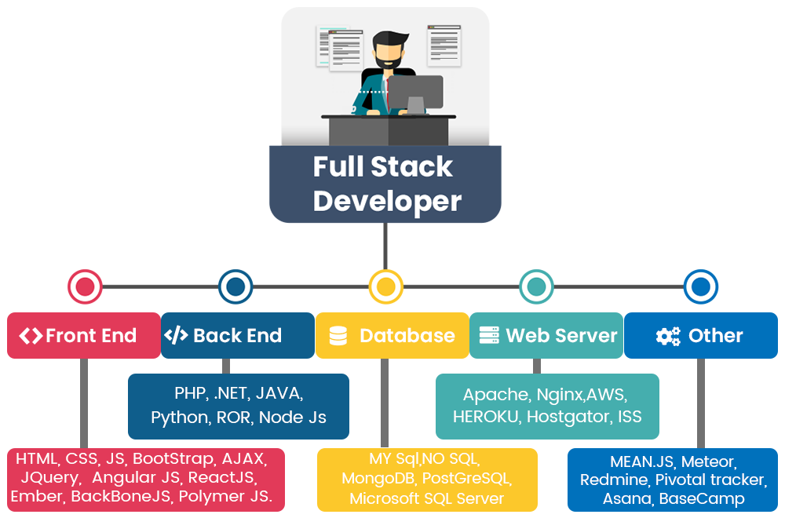

Full-Stack Expected Salary: £65K!
Full Stack Developers are computer programmers who are proficient in both front and back end
coding. Their primary responsibilities include designing user interactions on websites,
developing servers and databases for website functionality and coding for mobile platforms.
Full Stack Developer Responsibilities:
Full Stack Developer Responsibilities:
- Developing front end website architecture.
- Designing user interactions on web pages.
- Developing back end website applications.
- Creating servers and databases for functionality.
- Ensuring cross-platform optimization for mobile phones.
- Ensuring responsiveness of applications.
- Working alongside graphic designers for web design features.
- Seeing through a project from conception to finished product.
- Designing and developing APIs.
- Meeting both technical and consumer needs.
- Staying abreast of developments in web applications and programming languages.

Full Stack Developer Requirements:
- Degree in Computer Science.
- Strong organizational and project management skills.
- Proficiency with fundamental front-end languages such as HTML, CSS and JavaScript.
- Familiarity with JavaScript frameworks such as Angular JS, React and Amber.
- Proficiency with server-side languages such as Python, Ruby, Java, PHP and .Net.
- Familiarity with database technology such as MySQL, Oracle and MongoDB.
- Excellent verbal communication skills.
- Good problem-solving skills.
- Attention to Detail.
Testimonial
" In a full stack web development role, you need to know how to code. You build a website that goes down onto someone’s browser and you’d also build the program that sits on the server that sends out that web page. There’s been kind of a tradition of splitting the two skills up so a company would have a front-end developer and a back-end developer. The cost of salaries in this field is quite high so from an employer's perspective, by combining the two into one role, you’re able to hire one developer instead of two."